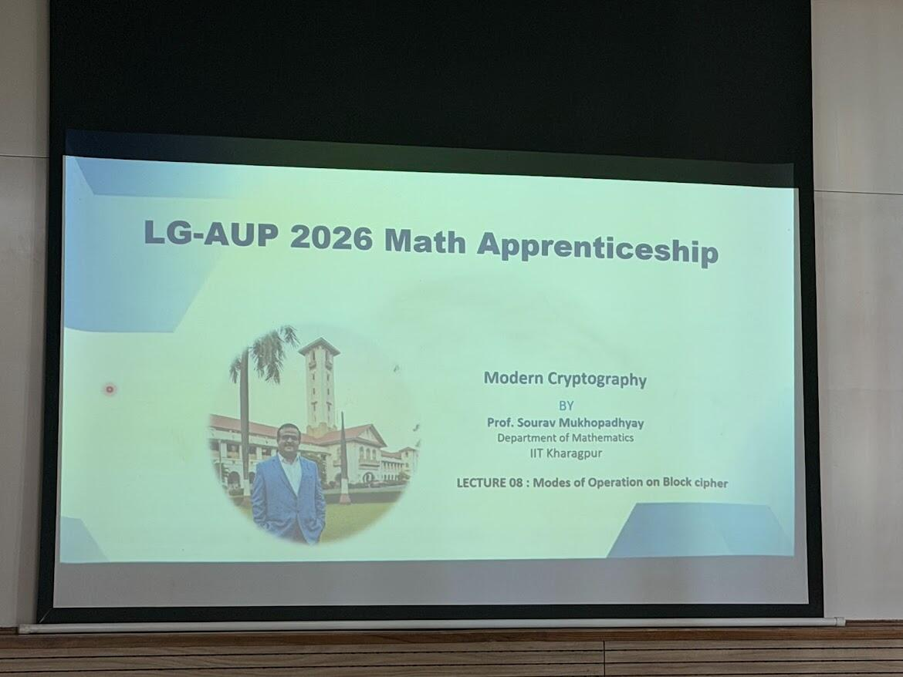
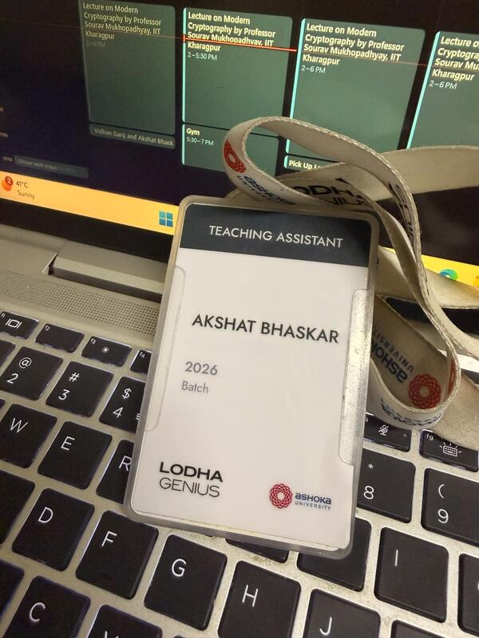

he first half of my gap year went to mathematics. I did a residential mathematics apprenticeship under Professor Shanta Laishram, Head of the Theoretical Statistics and Mathematics Unit (Stat-Math Unit) at the Indian Statistical Institute (ISI), Delhi, working in advanced number theory, hosted at Ashoka University. I received a 10,000 INR research stipend, and all in all, it was one of the most fulfilling summers of my life!

A lecture on modern cryptography, from the mathematics apprenticeship.
I was also a Teaching Assistant to the Lodha Genius Programme 2026, an undergraduate teaching position that the programme made an exception to include me in. Over four weeks, housed at Ashoka University, I worked across four completely different courses: the Mathematics of Investing, Rubik's Cube and Group Theory, Basic but Essential Mechanics, and Origami and Advanced Geometry.

My Teaching Assistant ID card, Lodha Genius Programme.
Then, for the latter part of my gap year, I worked on a completely different question. Throughout my work in financial literacy, I had assumed ignorance was the disease and information the cure. I am still running Edunomix and Decoded, but I had started to see that literacy is only one part of the story. So once I landed back in Delhi from Ashoka, I began exploring that full time: under the guidance of Professor Hemant Kakkar at the Indian School of Business, I am now studying how financial misinformation spreads across Indian social media, using language models built for Indian languages (MuRIL and XLM-RoBERTa), paired with validated psychological instruments to work out not just which posts are false, but who is most likely to pass them on. Check out the GitHub here! I am still in the middle of this study. The data collection phase is now complete, with 300 responses collected, and I am moving on to the analysis and the NLP component of the study :)

I also kept running Edunomix day to day and launched the second edition of our nationwide essay competition, judged by economics scholars from Harvard, UC Berkeley, Cornell, and Warwick. We ran the Ukraine Speaks English seminars again this season with Learn and Teach UA, free financial education for students across Ukraine.
And I expanded the Decoded team out from just Amaira and me into a real operation, with more than 20 volunteers across research, social media, and outreach, and worked on a collaboration with HERizon on various events.